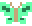
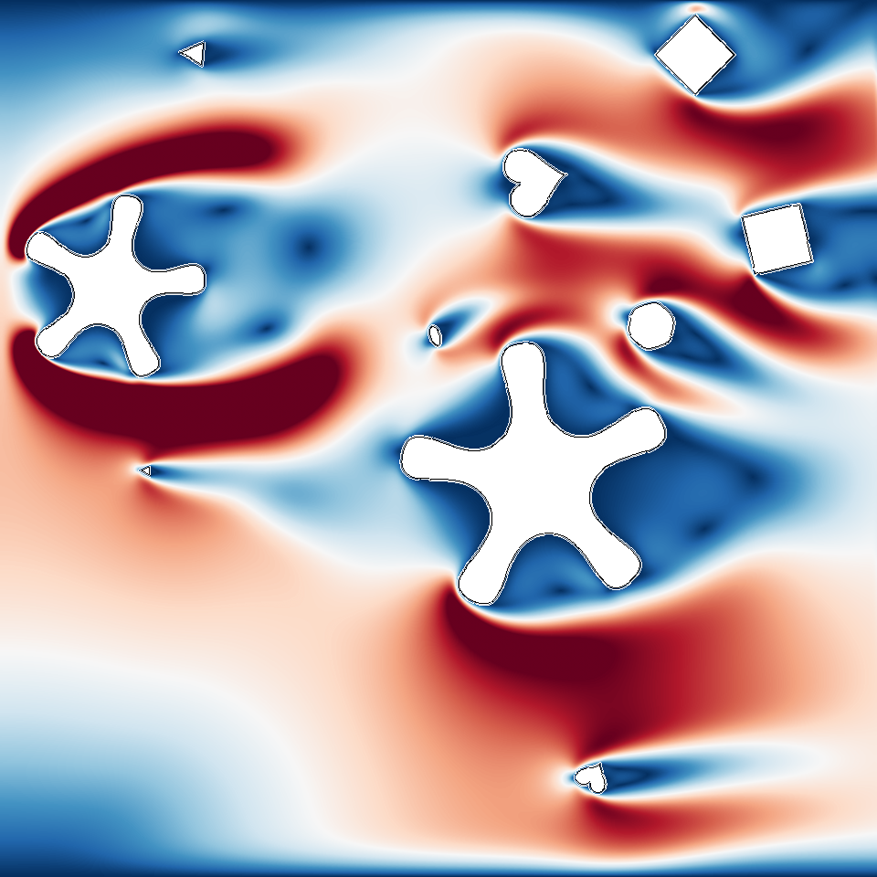
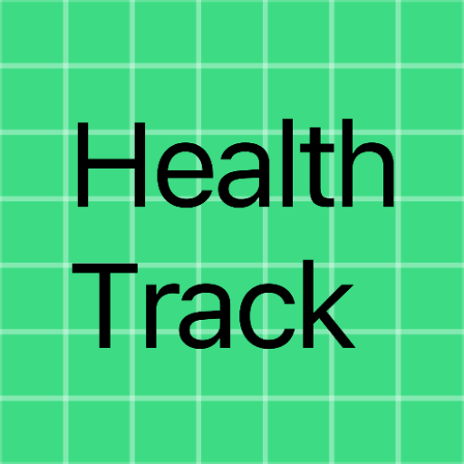
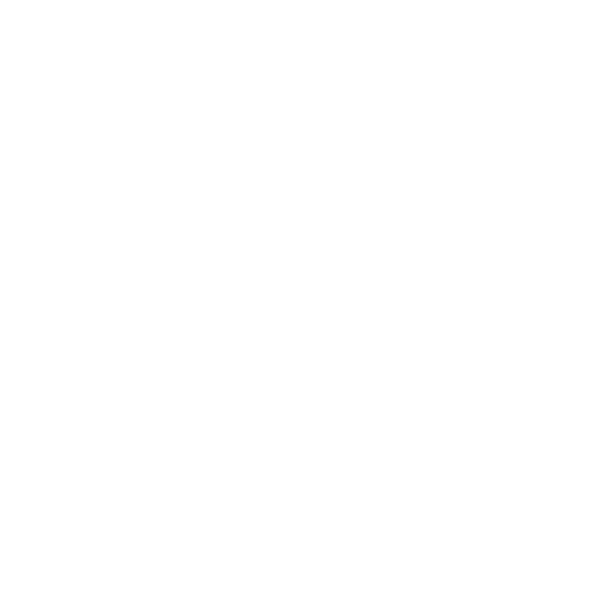
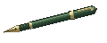

AI / RESEARCH TOOLS
Claim2Code
PYTHON · FASTAPI · PYTORCH · PGVECTORAn AI agent that checks claims in ML papers against PyTorch code. It combines embeddings with symbol/dependency signals, served through FastAPI with PostgreSQL and pgvector.

nox.sys CODE / ART / CURIOSITYNOX_ZENG / PERSONAL WEBSITE
Computer Science @ Georgia Tech
M.S. · Machine Learning
I’m Nox, a Computer Science master’s student at Georgia Tech, where I also earned my B.S. My focus is machine learning, and my current research explores RSI. I’ve also worked on LLM agents and reinforcement learning, including an AI internship at ZTE, where I built distributed training pipelines for multi-turn agents. I recently submitted a paper to ACL Rolling Review (ARR) and am in team matching for Google’s 2027 SWE internship. Outside of CS, I enjoy reading, Polaroid and film photography, drawing and painting, and visiting historic sites, especially ancient tombs.
02 / SELECTED PROJECTS
AI / RESEARCH TOOLS
An AI agent that checks claims in ML papers against PyTorch code. It combines embeddings with symbol/dependency signals, served through FastAPI with PostgreSQL and pgvector.
A NASA API dashboard with real-time ISS tracking, 2D/3D maps, asteroid statistics, and an astronomy picture of the day.
VUE · TYPESCRIPT · CESIUMJS · NASA APIs
A 2D fluid solver with randomized obstacle generation, built to produce varied simulation data for machine learning.
PYTHON · LBM · MACHINE LEARNING
Log calories, track workouts, and join community challenges with role-based features and a clear view of your progress.
MOBILE · MVVM · COMMUNITY
Connecting people with sustainable fashion, local makers, and the stories behind what we wear.
MOBILE · SUSTAINABILITY · ROLE-BASED UX
04 / KNOW MORE ABOUT ME
I read a bit of everything, but history books are my favorite.
Lately I’ve been puzzling over Nabokov’s Pale Fire.
I love Polaroid and film photography for the surprises, including the occasional “oh no.”
While I’m waiting for a photo to develop, I never quite know what I’m going to get. I like that uncertainty and the excuse to experiment.
View my PolaroidsWith watercolor, I love seeing how water and pigment spread and blend on cotton paper. Changing the amount of water or the mix of colors can lead to very different results.
I also enjoy drawing and painting with other materials.
I like visiting historic sites of all kinds, especially ancient tombs. There’s a lot to learn from the architecture, carvings, and inscriptions.
I have a lot of respect for the people resting there, so I try to be a good guest and leave everything as I found it.
to you,
who found your way here.